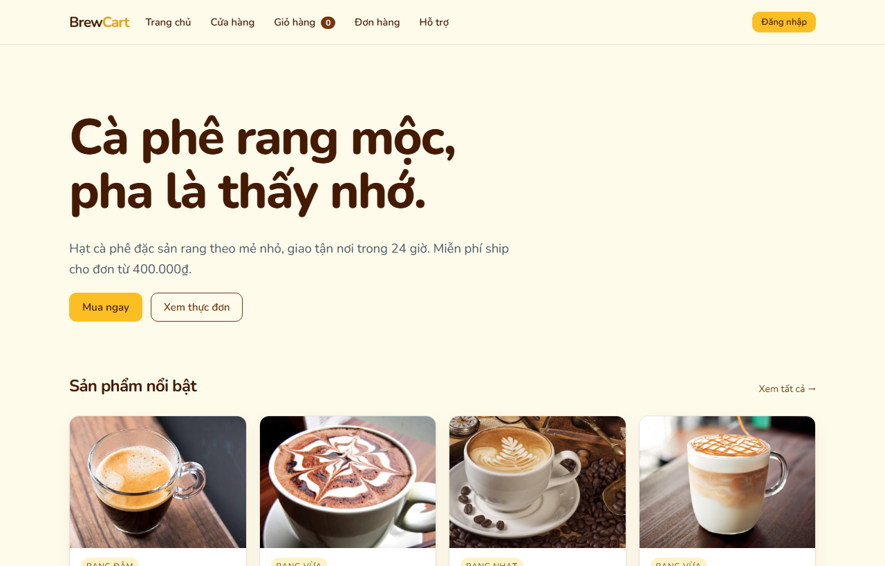
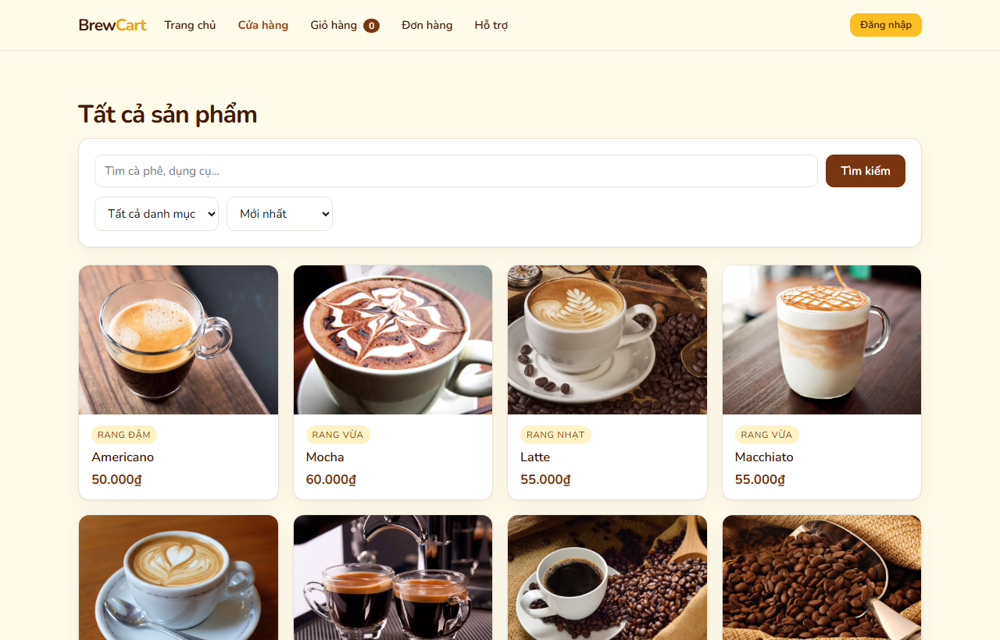
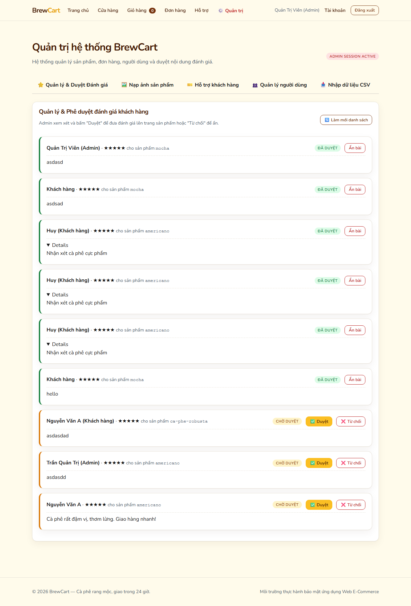
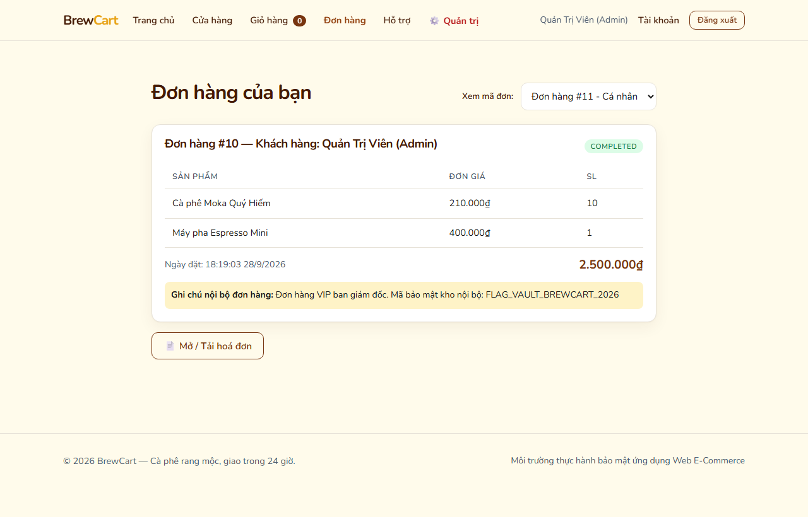
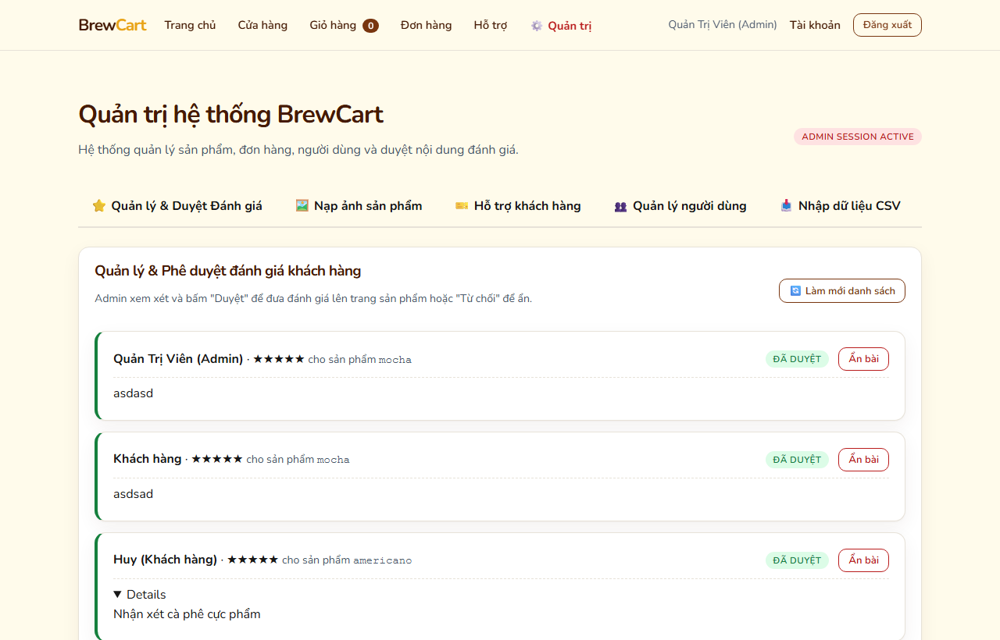
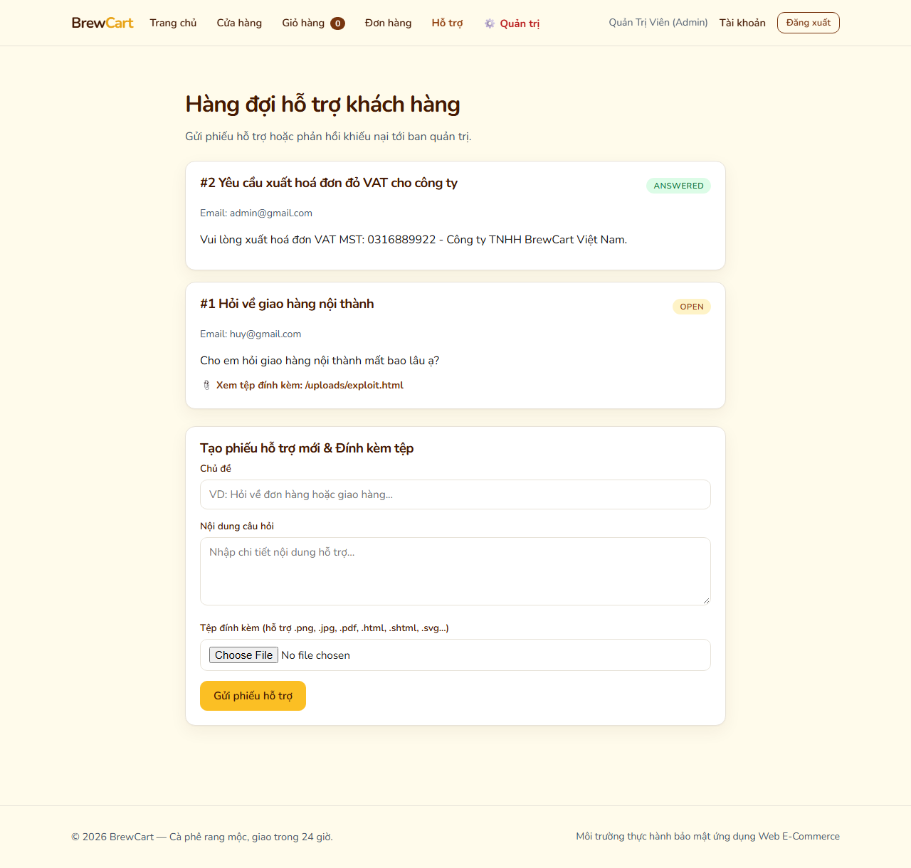
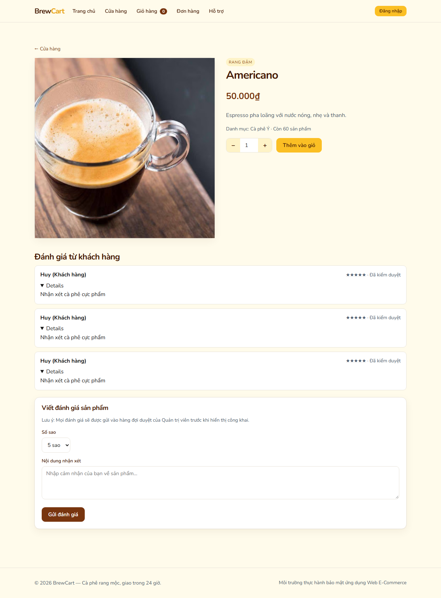
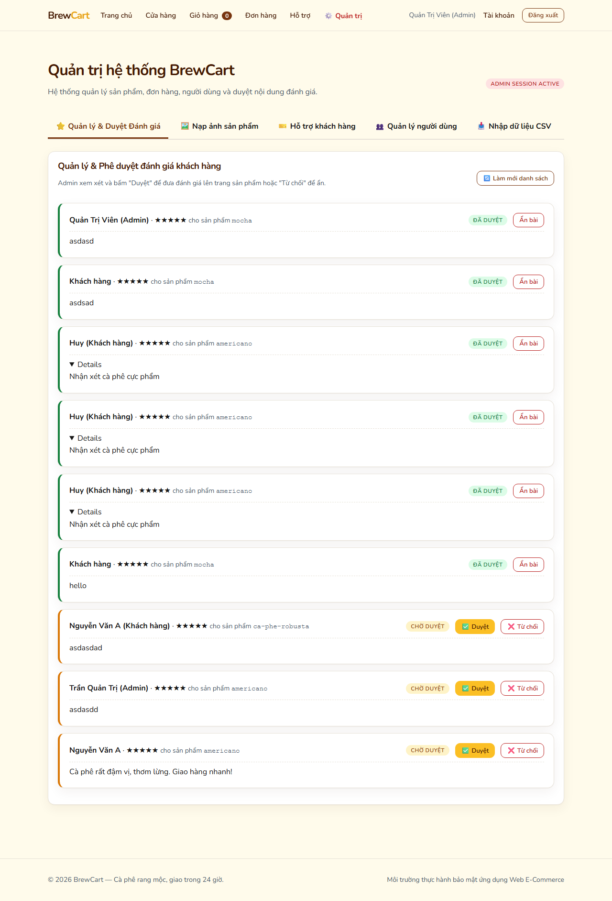

Email:
admin@gmail.comMật khẩu:
Admin123!Quyền hạn:
admin
Email:
huy@gmail.comMật khẩu:
user123Quyền hạn:
customer
Email:
test@test.comMật khẩu:
test123Quyền hạn:
customer


2. Bảng Tổng Hợp Lỗ Hổng Theo Chủ Đề PortSwigger
| # | Chủ Đề PortSwigger Academy | Dạng Lỗ Hổng Cụ Thể | Mức Độ | Điểm Lỗi API và Giao Diện | Trạng Thái Kiểm Thử |
|---|---|---|---|---|---|
| 1 | Access Control Vulnerabilities | Vertical privilege escalation và Mass assignment | Critical | GET /api/member/users & PATCH /api/member/profile |
Xác nhận |
| 2 | Insecure Direct Object References | Insecure direct object references trên đơn hàng | High | GET /api/member/orders/:id & /invoice |
Xác nhận |
| 3 | Server-Side Request Forgery | SSRF với kỹ thuật bypass bộ lọc danh sách đen bằng Trailing Dot | Critical | POST /api/admin/supplier-sync |
Xác nhận |
| 4 | SQL Injection | Time-based blind SQL injection trên tham số lọc danh mục | High | GET /api/store/products?category=... |
Xác nhận |
| 5 | File Upload Vulnerabilities | Tải lên tệp HTML độc hại không giới hạn định dạng đuôi tệp | High | POST /api/member/support/tickets/:id/attachments |
Xác nhận |
| 6 | Cross-Site Scripting | Stored XSS thực thi trong phiên duyệt bài của Quản trị viên | Critical | POST /api/store/reviews và bảng duyệt bài Admin |
Xác nhận |
| 7 | Business Logic Vulnerabilities | Lỗ hổng xử lý nghiệp vụ khi nhập giá âm qua tệp dữ liệu CSV | Medium | POST /api/admin/imports/csv |
Xác nhận |
3. Chi Tiết Kỹ Thuật Từng Lỗ Hổng
Vị trí mã nguồn: Tuyến đường GET /api/member/users và tuyến đường PATCH /api/member/profile trong tệp vulnerable-ipx/server.js.
1. Tuyến đường lấy danh sách người dùng chỉ kiểm tra xem người dùng đã đăng nhập hay chưa bằng middleware xác thực phiên, hoàn toàn không kiểm tra xem người dùng đó có vai trò quản trị viên hay không. Do đó một tài khoản khách hàng thông thường có thể đọc được toàn bộ danh sách tài khoản, thư điện tử, vai trò và số điểm tích lũy của toàn hệ thống.
2. Tuyến đường cập nhật thông tin cá nhân lấy trực tiếp toàn bộ dữ liệu gửi lên từ yêu cầu của người dùng để đưa vào câu lệnh cập nhật cơ sở dữ liệu mà không có danh sách trắng lọc các trường được phép sửa. Người dùng có thể gửi thêm trường vai trò quản trị viên để tự nâng quyền tài khoản của mình.
Đoạn mã dính lỗi trong máy chủ:
// server.js - Thiếu kiểm tra quyền quản trị viên khi lấy danh sách người dùng
app.get('/api/member/users', requireAuth, async (req, res) => {
const db = await getDb();
const [rows] = await db.query('SELECT id, name, email, role, loyalty_points FROM users ORDER BY id ASC');
return res.json(rows);
});
// server.js - Cho phép cập nhật mọi trường dữ liệu mà không có danh sách trắng
app.patch('/api/member/profile', requireAuth, async (req, res) => {
const fields = Object.keys(req.body);
const updates = fields.map(k => `${k} = ?`).join(', ');
const values = fields.map(k => req.body[k]);
values.push(req.user.id);
await db.query(`UPDATE users SET ${updates} WHERE id = ?`, values);
return res.json({ success: true });
});
// 1. Kiểm tra vai trò quản trị viên
function requireAdmin(req, res, next) {
if (!req.user || req.user.role !== 'admin') {
return res.status(403).json({ error: 'Yêu cầu quyền quản trị viên' });
}
next();
}
// 2. Chỉ cho phép cập nhật tên và số điện thoại
const ALLOWED_KEYS = ['name', 'phone'];
const safeData = {};
for (const key of ALLOWED_KEYS) {
if (req.body[key] !== undefined) safeData[key] = req.body[key];
}Vị trí mã nguồn: Tuyến đường GET /api/member/orders/:id và GET /api/member/orders/:id/invoice trong tệp vulnerable-ipx/server.js.

const [rows] = await db.query(
'SELECT * FROM orders WHERE id = ? AND (user_id = ? OR ? = "admin")',
[orderId, req.user.id, req.user.role]
);Vị trí mã nguồn: Tuyến đường POST /api/admin/supplier-sync trong tệp vulnerable-ipx/server.js.
ops-internal, supplier-feed, localhost.Tuy nhiên bộ lọc thực hiện so sánh chuỗi nguyên văn. Khi truyền đường dẫn có dấu chấm ở cuối tên miền như
http://ops-internal.:8081/config, chuỗi tên máy chủ thu được là ops-internal. có dấu chấm, không trùng với chuỗi trong danh sách đen nên vượt qua bộ lọc thành công. Khi hệ thống mạng phân giải tên miền, dấu chấm ở cuối được hiểu là gốc tên miền và vẫn kết nối chính xác vào dịch vụ nội bộ, làm lộ toàn bộ mã khóa bí mật và biến môi trường.

const normalizedHost = parsedUrl.hostname.replace(/\.+$/, '').toLowerCase();
// Phân giải IP thực tế của normalizedHost và kiểm tra không nằm trong dải IP nội bộVị trí mã nguồn: Tuyến đường GET /api/store/products?category=... trong tệp vulnerable-ipx/server.js.
// server.js - Đoạn mã ghép chuỗi SQL trực tiếp
if (req.query.category) {
const cat = req.query.category;
query += ` WHERE p.category_id = '${cat}'`;
}
const [rows] = await db.query(query);Kết quả đo thời gian phản hồi thực tế:
Yêu cầu bình thường: Thời gian phản hồi 18 mili giây
Yêu cầu chứa lệnh trì hoãn 2 giây: Thời gian phản hồi 2012 mili giây -> Xác nhận lỗ hổng tồn tạilet query = 'SELECT p.* FROM products p';
const params = [];
if (req.query.category) {
query += ' WHERE p.category_id = ?';
params.push(req.query.category);
}
const [rows] = await db.query(query, params);Vị trí mã nguồn: Cấu hình phục vụ tệp tĩnh và tuyến đường POST /api/member/support/tickets/:id/attachments trong tệp vulnerable-ipx/server.js.

res.setHeader('Content-Disposition', 'attachment; filename="file.jpg"');
res.setHeader('Content-Security-Policy', "default-src 'none'");Vị trí mã nguồn: Tuyến đường POST /api/store/reviews trong vulnerable-ipx/server.js và logic hiển thị bài viết trong vulnerable-ipx/public/index.html.
2. Nhận xét chưa được duyệt sẽ không xuất hiện tại trang công khai của sản phẩm, giúp che giấu mã độc trước các công cụ quét tự động.
3. Khi quản trị viên đăng nhập vào hệ thống để kiểm duyệt nhận xét, giao diện trang quản trị sử dụng thuộc tính chèn HTML nguyên văn để hiển thị nội dung nhận xét.
4. Đoạn mã script độc hại được thực thi ngay trong ngữ cảnh phiên làm việc có đầy đủ quyền lực của quản trị viên, cho phép đánh cắp phiên làm việc hoặc tự động thực hiện các thao tác quản trị.


const reviewBody = document.createElement('p');
reviewBody.textContent = review.body; // Toàn bộ ký tự đặc biệt được hiển thị dưới dạng chuỗi thuầnVị trí mã nguồn: Tuyến đường POST /api/admin/imports/csv trong tệp vulnerable-ipx/server.js.
const parsedPrice = parseFloat(priceStr);
if (isNaN(parsedPrice) || parsedPrice <= 0) {
throw new Error('Giá sản phẩm không hợp lệ: Phải là số dương lớn hơn 0');
}4. Nguyên Tắc Phòng Thủ Toàn Diện Chuẩn PortSwigger
Để xây dựng hệ thống an toàn và loại bỏ triệt để chuỗi lỗ hổng kể trên, các nhà phát triển cần tuân thủ các nguyên tắc thiết kế phòng thủ nhiều lớp:
- Xác thực và Phân quyền chặt chẽ: Luôn áp dụng kiểm tra quyền hạn ở cấp độ định tuyến máy chủ cho mọi tài nguyên và chức năng quan trọng.
- Sử dụng danh sách trắng cho dữ liệu đầu vào: Chỉ cho phép các trường dữ liệu nằm trong danh sách được định nghĩa trước đi vào các thao tác cập nhật cơ sở dữ liệu.
- Kiểm soát kết nối mạng gửi từ máy chủ: Áp dụng máy chủ đại diện kiểm soát kết nối đi ra ngoài và chặn kết nối tới các dải địa chỉ nội bộ.
- Mã hóa ngữ cảnh dữ liệu đầu ra: Sử dụng phương thức gán chuỗi thuần hoặc mã hóa ký tự đặc biệt trước khi đưa dữ liệu vào cây giao diện của trình duyệt.
- Truy vấn tham số hóa tuyệt đối: Loại bỏ hoàn toàn việc ghép chuỗi vào câu lệnh SQL để triệt tiêu lỗ hổng chèn mã SQL.